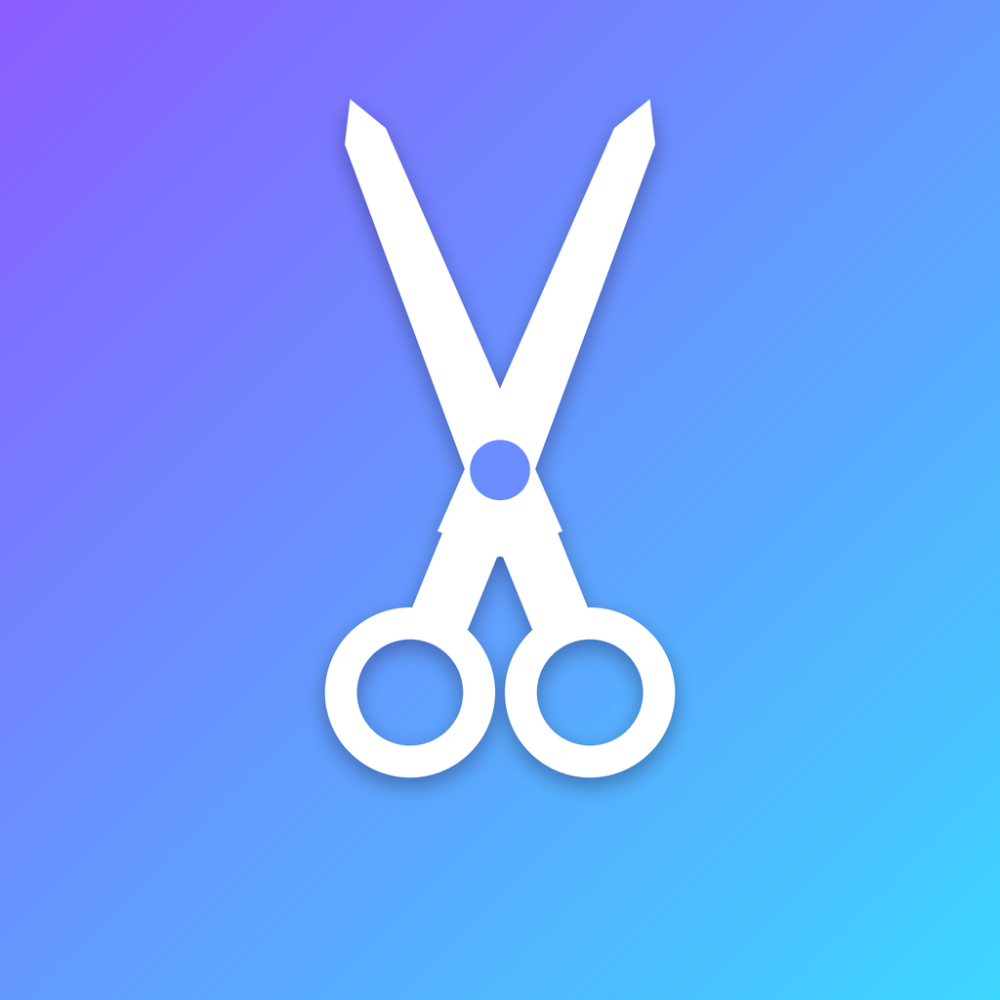

Clipper Studio
A desktop app that turns my own streams and videos into short vertical clips, with captions and face-following framing, and posts them to my own YouTube, TikTok and Instagram accounts.
How it works
- Clipper Studio runs on my own computer. There is no online service or user sign-up.
- I paste a link to one of my own videos or streams. The app finds the best moments and cuts them into Shorts.
- To post, I connect each account with the platform's official sign-in page (OAuth). The app never sees or stores my password.
- On each finished clip I click a platform button, review the caption, choose who can see it and press "Post now". Nothing is ever posted without that click.
Platforms
Posting uses only the official APIs: the YouTube Data API, the TikTok Content Posting API and the Instagram API. Clipper Studio isn't made by, endorsed by or affiliated with YouTube, TikTok or Instagram.